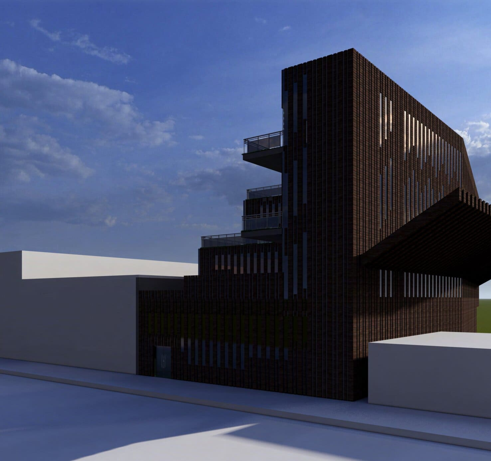

Cream City Commons
The Cream City Commons is a community
center designed to cater to thev needs of residents
living in the East Walker’s Point and North Harbor
View neighborhoods in downtown Milwaukee,
Wisconsin. The site, which is located near the border
of the neighborhoods, is easily accessible to the
community and offers ample space for a range of
activities. The center’s design creates welcoming
space that encourages social interaction and
community engagement.
The design features a four-story urban
environment, as well as a performance space, library,
cafe, outdoor space, and more. The facade includes
a repetitive design of planes that create a unique
natural way of lighting the interior. The exterior
planes create a sense of privacy and separates the
outside world while maintaining a connection to the
neighborhood. The community center allows for
social interactions through offering a wide variety of
events. From social gatherings to educational events,
the Cream City Commons creates new ways for
people to build connections at any occasion.
Drawings
Programing Diagrams
Renders


Exterior Render 01, Exterior Render 02
Drawings
(Top to bottom, left to right) Section 01, Section 02, Section 03, Street Elevation, Floor Plan 01, Floor Plan 02, Floor Plan 03, Floor Plan 04, Elevation 01, Elevation 02, Elevation 03, Section 04